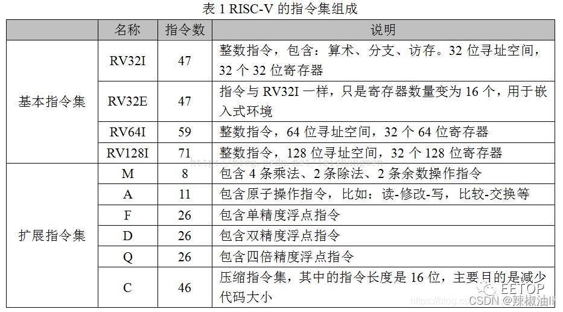
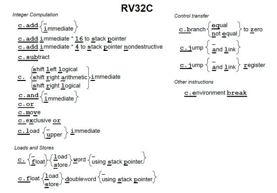
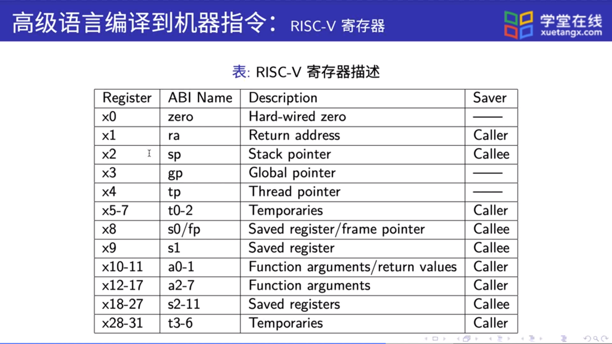
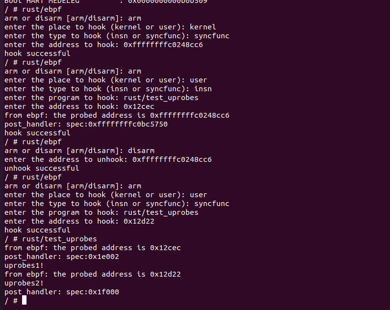

用Rust重新实现eBPF
项目描述
eBPF是Linux操作系统中监控和调试内核活动的方便工具，将eBPF以及其相关的kprobes内核监控程序与uprobes用户进程监控程序使用Rust进行重新实现，并针对Rust异步函数进行特有的监控.
该项目目前被应用于：
- NickCao/rCore，其中kprobes作为独立的内核模块，提供代码调试等功能.
- latte-c/rCore at bpf ，其中kprobes与uprobes给eBPF提供跟踪点功能.
具体目标
ebpf in rust 目前几个主要目标
-
解码riscv指令，对其进行跟踪合法性分析.
-
完成内核空间指令的动态插桩，对内核函数/合法指令进行跟踪.
-
完成用户空间指令的动态插桩，对用户态程序中的函数/合法指令进行跟踪.
-
function parameter probing in probes
完成probes对函数参数的获取.
-
根据ebpf原理实现一个简单的ebpf.
-
async in probes
完成probes对rust async 函数的跟踪支持.
Risc-V
简介
RISC-V是一个基于精简指令集（RISC）原则的开源指令集架构（ISA）。
与大多数指令集相比，RISC-V指令集可以自由地用于任何目的，允许任何人设计、制造和销售RISC-V芯片和软件。虽然这不是第一个开源指令集，但它具有重要意义，因为其设计使其适用于现代计算设备（如仓库规模云计算机、高端移动电话和微小嵌入式系统）。设计者考虑到了这些用途中的性能与功率效率。该指令集还具有众多支持的软件，这解决了新指令集通常的弱点。
指令集
指令集组成
RISC-V采用模块化的指令集，易于扩展、组装。
RISCV ISA = 1 个基本整数指令集（I） + 多个可选的扩展指令集
其中唯一强制要求实现的基础指令集，其他指令集都是可选的扩展模块。RISC-V 允许在实现中以可选的形式实现其他标准化和非标准化的指令集扩展。 RISC-V指令集模块包括：

压缩指令
RV32C 采用了一种新颖的方法：每条短指令必须和一条标准的 32 位 RISC-V 指令一一 对应。此外，16 位指令只对汇编器和链接器可见，并且是否以短指令取代对应的宽指令由 它们决定。编译器编写者和汇编语言程序员可以幸福地忽略 RV32C 指令及其格式，他们能 感知到的则是最后的程序大小小于大多数其它 ISA 的程序。图是 RV32C 扩展指令集的 图形化表示。

为了能在一系列的程序上得到良好的代码压缩效果，RISC-V 架构师精心挑选了 RVC 扩展中的指令。同时，基于以下的三点观察，架构师们成功地将指令压缩到了 16 位。第 一，对十个常用寄存器（a0-a5，s0-s1，sp 以及 ra）访问的频率远超过其他寄存器；第 二，许多指令的写入目标是它的源操作数之一；第三，立即数往往很小，而且有些指令比 较喜欢某些特定的立即数。因此，许多 RV32C 指令只能访问那些常用寄存器；一些指令隐 式写入源操作数的位置；几乎所有的立即数都被缩短了，load 和 store 操作只使用操作数整 数倍尺寸的无符号数偏移量。
详细指令参考卡片
寄存器
RISC-V 有足够多的寄存器来达到两全其美的结果：既能将操作数存放在寄存器中，同 时也能减少保存和恢复寄存器的次数。其中的关键在于，在函数调用的过程中不保留部分寄 存器存储的值，称它们为临时寄存器；另一些寄存器则对应地称为保存寄存器。不再调用其 它函数的函数称为叶函数。当一个叶函数只有少量的参数和局部变量时，它们可以都被存储 在寄存器中，而不会“溢出（spilling）”到内存中。但如果函数参数和局部变量很多，程序 还是需要把寄存器的值保存在内存中，不过这种情况并不多见。

Linux中的kprobes与uprobes
kprobes
开发人员在内核或者模块的调试过程中，往往会需要要知道其中的一些函数有无被调用、何时被调用、执行是否正确以及函数的入参和返回值是什么等等。比较简单的做法是在内核代码对应的函数中添加日志打印信息，但这种方式往往需要重新编译内核或模块，重新启动设备之类的，操作较为复杂甚至可能会破坏原有的代码执行过程。
而利用kprobes技术，用户可以定义自己的回调函数，然后在内核或者模块中几乎所有的函数中（有些函数是不可探测的，例如kprobes自身的相关实现函数，后文会有详细说明）动态的插入探测点，当内核执行流程执行到指定的探测函数时，会调用该回调函数，用户即可收集所需的信息了，同时内核最后还会回到原本的正常执行流程。如果用户已经收集足够的信息，不再需要继续探测，则同样可以动态地移除探测点。因此kprobes技术具有对内核执行流程影响小和操作方便的优点。
uprobes
uprobes 是Linux提供用户态的动态探针，合并于2012年7月发布的 Linux 3.5 内核中。uprobes 和 kprobes 十分相似，只不过用在用户态而已。 uprobes 可以检测到用户态函数入口和出口的位置。uprobes 工作原理和 kprobes 差不多，它会在目标位置插入一个断点，这样当程序执行流执行到这个地方会去执行我们设置的 uprobe handle。当我们不再不需探测和收集信息时候，可以移除断点恢复原状。
Rust 异步并发
简介
在当前的 rust 生态中，我们可以使用async/await来将异步函数按照同步函数的格式一样书写，使代码更加整洁，易于维护。
Future并发模式
Future异步并发模式是以代理模式和异步开发的混合产物，future是对将来的一种代理凭证，凭借这个凭证可以异步地在未来某个时刻得到确定的结果。
Rust对Future异步并发模式做了一个完整的抽象，包含在第三方库future-rs中。该抽象主要包含三个部件：
- Future： 基本的异步计算抽象单元
- Executor：异步计算调度层
- Task：异步计算执行层
Future
在Rust中Future是一个trait，其源代码为：
#![allow(unused)] fn main() { pub trait Future{ type Output; fn poll(self: Pin<&mut self>, lw: &LocalWaker) -> Poll<Self::Output>; } }
其中poll方法是Future的核心，它是对轮询行为的一种抽象。在Rust中，每个Future都需要使用poll方法来轮询所要计算值的状态。该方法返回的Poll是一个枚举类型：
#![allow(unused)] fn main() { pub enum Poll<T>{ Ready(T), Pending, } }
Poll<T>枚举类型是对准备好和未完成两种状态的统一抽象，以此来表达Future的结果。
Executor与Task
在实际的异步开发中，需要一个专门的调度器来对具体的任务进行管理统筹，这个调度器就是Executor，具体的异步任务就是Task。
async/await
async：产生一个 Future 对象，一个没有任何作用的对象，必须由调用器调用才会有用。 await: 等待异步操作完成（基于语义理解，其实很多情况只有调用 future.await 才是事实上去调用，具体是不是之前就开始执行，这个要看我们的调用器是什么），这步是阻塞当前线程，这个语法属于 Future 对象才能调用，而且必须要在 async 函数内。
具体实现原理
async块会生成一个Generator<Yield=()>的生成器，然后将该生成器通过单元结构体GenFuture进行包装，最后为该GenFuture实现Future
await!展开的代码会在loop循环中进行判断，如果是Ready则退出。
Linux中的eBPF
简介
eBPF 源于 BPF，本质上是处于内核中的一个高效与灵活的虚类虚拟机组件，以一种安全的方式在许多内核 hook 点执行字节码。BPF 最初的目的是用于高效网络报文过滤，经过重新设计，eBPF 不再局限于网络协议栈，已经成为内核顶级的子系统，演进为一个通用执行引擎。开发者可基于 eBPF 开发性能分析工具、软件定义网络、安全等诸多场景。
eBPF指令集
寄存器与调用约定
eBPF 有10个通用寄存器和一个只读栈帧寄存器，它们均为64位。
eBPF 调用规则定义为：
- R0：函数调用的返回值和 eBPF 程序的退出值
- R1 - R5：函数调用的参数
- R6 - R9：被调用方保存的寄存器，函数调用将保留这些寄存器
- R10：访问堆栈的只读栈帧指针
R0 - R5 是暂存寄存器，如有必要，eBPF 程序需要在调用之间溢出/填充它们。
指令编码
eBPF 有两种指令编码：
- 基本指令编码，使用 64 位对指令进行编码
- 宽指令编码，它在基本指令之后附加第二个 64 位即时值 （imm64），总共 128 位。
基本指令编码如下所示：
| 32 位 （MSB） | 16 位 | 4 位 | 4 位 | 8 位 （LSB） |
|---|---|---|---|---|
| 立即数 | 偏移 | 源寄存器 | 目标寄存器 | 操作码 |
请注意，大多数说明不会使用所有字段。未使用的字段应清除为零。
eBPF验证器
eBPF计划的安全性分两步确定。
第一步执行 DAG 检查以禁止循环和其他 CFG 验证。特别是，它将检测具有无法访问的指令的程序。（尽管传统的 BPF 检查器允许它们）
第二步从第一个 指令 开始，并下降所有可能的路径。它模拟每个 指令 的执行，并观察寄存器和堆栈的状态变化。
在程序开始时，寄存器R1包含一个指向上下文的指针，其类型为PTR_TO_CTX。如果验证者看到一个执行 R2=R1 的指令，则 R2 现在也具有类型 PTR_TO_CTX并且可以在表达式的右侧使用。如果 R1=PTR_TO_CTX指令 为 R2=R1+R1，则 R2=SCALAR_VALUE，因为添加两个有效指针会使指针无效。（在“安全”模式下，验证程序将拒绝任何类型的指针算术，以确保内核地址不会泄露给非特权用户）
eBPF_helpers
ebpf的帮助函数，在eBPF程序中，只可调用这些函数
eBPF_maps
maps是一个不同类型的通用存储方式，用于在内核和用户空间之间共享数据。
更多eBPF信息可查看：BPF Documentation — The Linux Kernel documentation
指令解码
设计理念
k/uprobes在插桩时
- 对于指令的插桩需要考虑指令的合法性判断
- 在函数跟踪时需要解析出栈帧变化的大小
设计思路
指令合法性判断
根据Linux里Kprobes关于Riscv指令的合法性检验，设置指令黑名单，黑名单内的指令不允许跟踪.
- system相关指令
- 页表刷新相关指令
- 常规指令
- auipc
- branch
- jal
- jalr
- 压缩指令
- c_j
- c_jr
- c_jal
- c_jalr
- c_beqz
- c_bnez
- c_ebreak
sp相关指令解码
根据Riscv文档，操作sp相关的指令有
-
addi
31 20 19 1514 12 11 7 6 0 ┌──────────────────┬──────────┬─────────┬────────┬─────────┐ │ imm[11:0] │ rs1 │ 000 │ rd │ 0010011 │ └──────────────────┴──────────┴─────────┴────────┴─────────┘ -
c.addi
15 13 12 11 10 7 6 2 1 0 ┌───────┬────────┬───────────┬─────────────────┬─────────┐ │ 011 │ imm[5] │ rd │ imm[4:0] │ 01 │ └───────┴────────┴───────────┴─────────────────┴─────────┘ -
c.addi16sp
15 13 12 11 10 7 6 2 1 0 ┌───────┬────────┬───────────┬────────────────────┬─────────┐ │ 011 │ imm[9] │ 00010 │ imm[4|6|8:7|5] │ 01 │ └───────┴────────┴───────────┴────────────────────┴─────────┘ -
c.addi4spn
15 13 12 5 4 2 1 0 ┌───────┬────────────────────┬─────────┬─────────┐ │ 000 │ imm[5:4|9:6|2|3] │ rd' │ 00 │ └───────┴────────────────────┴─────────┴─────────┘
kprobes
设计思路
函数跟踪
-
注册阶段
- 根据传入的地址，解析指令，获取sp的变化值，与
handler，post_handler等一起存入kprobes数据结构中. - 将当前地址的指令改为
ebreak.
- 根据传入的地址，解析指令，获取sp的变化值，与
-
中断处理阶段
根据中断地址判断当前属于哪个
kprobe,并判断其属于哪一次中断.- 第一次中断
- 执行
handler. - 保存跟踪函数的返回值，并将其改为ebreak的地址.
- 根据解析出的sp值，对堆栈指针进行操作.
- 返回到中断指令的下一条指令.
- 执行
- 第二次中断
- 执行
post_handler. - 将中断的返回地址改为之前保存的返回值.
- 执行
- 第一次中断
指令跟踪
-
注册阶段
- 根据传入的地址，解析指令，判断是否合法(合法的判断条件同Linux的规则)，将
handler，post_handler等一起存入kprobes数据结构中. - 如果合法，将当前地址的指令存放到一片已经开辟了的内存空间中，并在指令后添加ebreak指令.
- 根据传入的地址，解析指令，判断是否合法(合法的判断条件同Linux的规则)，将
-
中断处理阶段
根据中断地址判断当前属于哪个
kprobe,并判断其属于哪一次中断.- 第一次中断
- 执行
handler. - 返回到注册阶段开辟出来的地址上.
- 执行
- 第二次中断
- 执行
post_handler. - 将中断返回地址改为原地址的下一条指令的地址.
- 执行
- 第一次中断
数据结构
- addr： 跟踪的地址
- length： 指令长度
- slot： 指令插槽值
- addisp： 栈指针偏移
- func_ra： 返回值地址
- func_ebreak_addr： 函数中断地址
- insn_ebreak_addr： 指令中断地址
- handler： 跟踪前回调函数
- post_handler： 跟踪后回调函数
- probe_type： 探测类型
流程图
流程图数据结构版
流程图堆栈版

Uprobes
设计思路
函数跟踪
-
注册阶段
- 根据传入的地址与探测的用户程序路径，解析指令，获取sp的变化值，与
handler，post_handler等一起存入uprobes数据结构中. - 将当前地址改为可写并修改指令为
ebreak.
- 根据传入的地址与探测的用户程序路径，解析指令，获取sp的变化值，与
-
中断处理阶段
根据中断地址与进程inode判断当前属于哪个
uprobe,并判断其属于哪一次中断.剩下同kprobes处理办法.- 第一次中断
- 执行
handler. - 保存跟踪函数的返回值，并将其改为ebreak的地址.
- 根据解析出的sp值，对堆栈指针进行操作.
- 返回到中断指令的下一条指令.
- 执行
- 第二次中断
- 执行
post_handler. - 将中断的返回地址改为之前保存的返回值.
- 执行
- 第一次中断
指令跟踪
-
注册阶段
- 根据传入的地址，解析指令，判断是否合法(合法的判断条件同Linux的规则)，将
handler，post_handler等一起存入kprobes数据结构中. - 如果合法，开辟一块可读可写可执行的用户态空间，将当前地址的指令存放到开辟了的用户态空间中，并在指令后添加ebreak指令.
- 根据传入的地址，解析指令，判断是否合法(合法的判断条件同Linux的规则)，将
-
中断处理阶段
根据中断地址与用户态进程的路径判断当前属于哪个
uprobe,并判断其属于哪一次中断.剩下同kprobes处理办法.- 第一次中断
- 执行
handler. - 返回到注册阶段开辟出来的地址上.
- 执行
- 第二次中断
- 执行
post_handler. - 将中断返回地址改为原地址的下一条指令的地址.
- 执行
- 第一次中断
执行阶段
获取即将运行的用户态进程，将该进程上已经注册的跟踪点进行操作，添加ebreak等
数据结构
- addr： 跟踪的地址
- length： 指令长度
- slot_addr： 用户态插槽的地址
- addisp： 栈指针偏移
- func_ra： 返回值地址
- func_ebreak_addr： 函数中断地址
- insn_ebreak_addr： 指令中断地址
- handler： 跟踪前回调函数
- post_handler： 跟踪后回调函数
- probe_type： 探测类型
流程
流程基本同kprobes
异步函数的动态跟踪
设计思路（初步想法）
- 跟踪poll的第一次入与出
eBPF
设计思路
解释器
根据字节码，解析出立即数，偏移量，源寄存器，目标寄存器与操作码。
根据操作码，对寄存器进行操作
eBPF helpers
结合rCore自身，设计helper函数
参考
linux bpf impl kernel/bpf
指令解码
根据Riscv设计文档进行解码.
指令合法性判断库
在已有的riscv-decode库的基础上，增加了压缩指令的解码过程
将riscv_insn_decode代码解耦合后，独立成库:riscv_insn_decode
使用说明
如果要使用 riscv_insn_decode库,首先需要更新 Cargo.toml
[dependencies]
riscv_insn_decode = {git = "https://github.com/hm1229/riscv_insn_decode", rev = "0b954c9"}
数据结构
InsnStatus
指令是否合法
#![allow(unused)] fn main() { #[derive(Debug)] pub enum InsnStatus { Illegal, Legal, } }
APIs
get_insn_length
根据传入的指令地址，返回指令的长度
#![allow(unused)] fn main() { use riscv_insn_decode::get_insn_length; let length = get_insn_length(addr); }
insn_decode
根据传入的指令地址，返回指令是否合法.
#![allow(unused)] fn main() { use riscv_insn_decode::{insn_decode, InsnStatus}; match insn_decode(addr){ InsnStatus::Legal => { unimplemented!(); }, InsnStatus::Illegal => { unimplemented!(); } } }
sp相关指令解码
根据Riscv文档，解析立即数.
addi
#![allow(unused)] fn main() { let inst = u32::from_le_bytes(slot[..4].try_into().unwrap()); // addi sp, sp, imm let addisp = sext(((inst >> 20) & 0b111111111111) as isize, 12) as usize; }
c.addi16sp imm
#![allow(unused)] fn main() { fn sext(x: isize, size: usize) -> isize { let shift = core::mem::size_of::<isize>() * 8 - size; (x << shift) >> shift } let inst = u16::from_le_bytes(slot[..2].try_into().unwrap()); let addisp = sext( ((((inst >> 12) & 0b1) << 9) + (((inst >> 6) & 0b1) << 4) + (((inst >> 5) & 0b1) << 6) + (((inst >> 3) & 0b11) << 7) + (((inst >> 2) & 0b1) << 5)) as isize, 10, ) as usize; }
c.addi sp, imm
#![allow(unused)] fn main() { fn sext(x: isize, size: usize) -> isize { let shift = core::mem::size_of::<isize>() * 8 - size; (x << shift) >> shift } let inst = u16::from_le_bytes(slot[..2].try_into().unwrap()); let addisp = sext( ((((inst >> 12) & 0b1) << 5) + (((inst >> 2) & 0b11111) << 0)) as isize, 6, ) as usize; }
c.addi4spn
#![allow(unused)] fn main() { fn sext(x: isize, size: usize) -> isize { let shift = core::mem::size_of::<isize>() * 8 - size; (x << shift) >> shift } let inst = u16::from_le_bytes(slot[..2].try_into().unwrap()); let addisp = sext(((((inst >> 11) & 0b111) << 3) + (((inst >> 7) & 0b1111) << 5) + (((inst >> 6) & 0b1) << 1) + (((inst >> 5) & 0b1) << 2)) as isize, 10 ) as usize; }
内核及用户态动态跟踪程序
内核跟踪库-rkprobes_lib
可以在kprobes的系统设计一节看到关于kprobes的实现原理.
如果单独使用kprobes，kprobes可以单独成为一个lib，方便所有操作系统调用.
lib: github仓库.
使用说明
APIs
#![allow(unused)] fn main() { // register a kprobe, need the address of the function or instruction, two handler functions and the type you want to probe pub fn kprobe_register( addr: usize, handler: Arc<Mutex<dyn FnMut(&mut TrapFrame) + Send>>, post_handler: Option<Arc<Mutex<dyn FnMut(&mut TrapFrame) + Send>>>, probe_type: ProbeType ) -> isize ; //unregister address-related probe pub fn kprobe_unregister(addr: usize) -> isize; //trap handler for handler kprobes pub fn kprobes_trap_handler(cx: &mut TrapFrame); }
方法
-
讲
kprobes_trap_handler放到OS的中断处理程序中.例如：#![allow(unused)] fn main() { pub fn trap_handler_no_frame(tf: &mut TrapFrame) { let scause = scause::read(); match scause.cause() { Trap::Exception(E::Breakpoint) => rkprobes::kprobes_trap_handler(tf), //add here } } } -
准备
handler和post_handler,handler在函数或指令之前执行的跟踪函数，post_hanlder在函数或指令执行之后运行的跟踪函数.handler是必须的,post_handler是可选择的,这两个函数的输入值是一个包含所有寄存器的结构体，使用的是TrapFrame的结构体.#![allow(unused)] fn main() { pub fn example_pre_handler(cx: &mut TrapFrame){ println!{"pre_handler: spec:{:#x}", cx.sepc}; } pub fn example_post_handler(cx: &mut TrapFrame){ println!{"post_handler: spec:{:#x}", cx.sepc}; } } -
为了注册一个
kprobe, 你需要传递函数或指令的地址 , 自己写好的handler和post_handler(可选), 跟踪的方式(函数或者指令).#![allow(unused)] fn main() { pub enum ProbeType{ Insn, Func, } rkprobes::kprobe_register( self.addr, alloc::sync::Arc::new(Mutex::new(move |cx: &mut TrapFrame| { example_pre_handler(cx); })), Some(alloc::sync::Arc::new(Mutex::new(move |cx: &mut TrapFrame| { example_post_handler(cx); }))), ProbeType::Insn, ) } -
为了注销一个
kprobe, 你只需要传递跟踪点的地址.#![allow(unused)] fn main() { rkprobes::kprobe_unregister(addr) }
rCore中内核及用户态跟踪程序
kprobes
kprobes的操作与rkprobes使用一致.
为了方便后续可以跟踪异步函数，probe_type结构体进行了一次更新.
#![allow(unused)] fn main() { pub enum ProbeType { Insn, SyncFunc, AsyncFunc, } }
uprobes
在注册阶段需要额外传入需要跟踪的用户态进程的路径,其余参数与kprobes一样.
#![allow(unused)] fn main() { fn register_uprobes( &self, path: String, addr: usize, handler: Arc<Mutex<dyn FnMut(&mut UserContext) + Send>>, post_handler: Option<Arc<Mutex<dyn FnMut(&mut UserContext) + Send>>>, probe_type: ProbeType ) -> isize; }
中断处理函数需要传入另一个存储寄存器的结构体
#![allow(unused)] fn main() { fn uprobes_trap_handler(&self, cx: &mut UserContext); }
针对每一个用户态进程，需要在进入时初始化当前进程注册过的跟踪点
#![allow(unused)] fn main() { fn uprobes_init(&self) }
使用方法
如果需要使用uprobes，你需要：
- 注册uprobes.
- 将uprobes中断处理函数放到内核处理用户态发生的中断的函数中去.
- 在sys_exec中加入初始化函数
uprobes_init.
eBPF
解释器
指令解码
通过pc指针，获取当前指令，将其拆分为立即数，偏移量，源寄存器，目标寄存器，操作码
#![allow(unused)] fn main() { let inst = insts[pc as usize]; pc += 1; let imm: i32 = ((inst >> 32) & u32::MAX as u64) as i32; let off: i16 = ((inst >> 16) & u16::MAX as u64) as i16; let src: usize = ((inst >> 12) & 0x0f) as usize; let dst: usize = ((inst >> 8) & 0x0f) as usize; let op: u8 = (inst & u8::MAX as u64) as u8; }
指令的模拟执行
由于eBPF指令较多，在此只展示部分指令的模拟执行过程.
算数指令
根据源操作数的不同又分为：
BPF_K
使用 32 位即时作为源操作数
BPF_X
使用
src_reg寄存器作为源操作数
-
add
#![allow(unused)] fn main() { ALU_K_ADD => reg[dst] = (reg[dst] as i32).wrapping_add(imm) as u64, ALU_X_ADD => reg[dst] = (reg[dst] as i32).wrapping_add(reg[src] as i32) as u64, } -
or
#![allow(unused)] fn main() { ALU_K_OR => reg[dst] = (reg[dst] as u32 | imm as u32) as u64, ALU_X_OR => reg[dst] = (reg[dst] as u32 | reg[src] as u32) as u64, } -
etc.
跳转指令
-
call
#![allow(unused)] fn main() { JMP_K_CALL => unsafe { reg[0] = helpers[imm as usize](reg[1], reg[2], reg[3], reg[4], reg[5]); }, } -
jlt
#![allow(unused)] fn main() { JMP_K_JLT => { if reg[dst] < imm as u64 { pc = (pc as i16 + off) as u16; } } JMP_X_JLT => { if reg[dst] < reg[src] { pc = (pc as i16 + off) as u16; } } } -
etc.
eBPF-helpers
eBPF的帮助函数是与操作系统息息相关的，因为目前暂未实现map，所以只有少量帮助函数可用：
-
bpf_ktime_get_ns打印当前时间
#![allow(unused)] fn main() { // u64 bpf_ktime_get_ns(void) // return current ktime fn bpf_ktime_get_ns(_1: u64, _2: u64, _3: u64, _4: u64, _5: u64) -> u64 { crate::arch::timer::timer_now().as_nanos() as u64 } } -
bpf_trace_printk打印输出
#![allow(unused)] fn main() { // long bpf_trace_printk(const char *fmt, u32 fmt_size, ...) unsafe fn bpf_trace_printk(fmt: u64, fmt_size: u64, p1: u64, p2: u64, p3: u64) -> u64 { let fmt = core::slice::from_raw_parts(fmt as *const u8, fmt_size as u32 as usize); println!( "{}", dyn_fmt::Arguments::new(core::str::from_utf8_unchecked(fmt), &[format!("{:#x}", p1), format!("{}", p2), format!("{}", p3)]) ); 0 } } -
bpf_get_current_pid_tgid返回进程id
#![allow(unused)] fn main() { fn bpf_get_current_pid_tgid(_1: u64, _2: u64, _3: u64, _4: u64, _5: u64) -> u64 { let thread = current_thread().unwrap(); let pid = thread.proc.busy_lock().pid.get() as u64; // NOTE: tgid is the same with pid (pid << 32) | pid } }
动态注册eBPF程序测试
测试准备
eBPF demo
实现了一个小的eBPF程序，只负责打印输出寄存器中的sepc值
int prog(struct TrapFrame* cx) {
char fmt[] = "from ebpf: the probed address is {}";
bpf_trace_printk(fmt, 37, cx->sepc, 0, 0);
return 0;
}
用户态程序
eBPF插桩程序
该程序主要负责接收用户的动态注册要求，通过系统调用的方式在内核态进行注册，注册完成会返回注册提示。
交互部分代码省略，系统调用注册部分代码：
#![allow(unused)] fn main() { //rust/ebpf fn syscall_ebpf(addr: String, tp: u16, path: String){ let prog = include_bytes!("hello.bin"); if sys_register_ebpf( usize::from_str_radix(&addr, 16).unwrap(), prog as *const u8, prog.len(), tp as usize, path.as_ptr() ) == 0 { println!("hook successful"); } else { println!("hook failed"); } } }
用户态动态插桩测试程序
该程序只用来调用两个函数：
//rust/test_uprobes pub fn main(){ test_uprobes1(); test_uprobes2(); } #[inline(never)] fn test_uprobes1(){ println!("uprobes1!"); } #[inline(never)] fn test_uprobes2(){ println!("uprobes2!"); }
测试
测试步骤
- 进行内核eBPF注册程序(
ebpf::arm)的函数跟踪插桩 - 进行用户态测试程序(
test_uprobes::test_uprobes1)的指令跟踪插桩 - 解除内核eBPF注册程序(
ebpf::arm)的插桩 - 进行用户态测试程序(
test_uprobes::test_uprobes2)的函数跟踪插桩 - 运行用户态测试程序(
test_uprobes)
结果展示

结果解析
-
在进行用户态测试程序(
test_uprobes::test_uprobes1)的指令跟踪插桩后，会有输出:from ebpf: the probed address is 0xffffffffc0248cc6 post_handler: spec:0xffffffffc0bc5750说明内核态程序可以正常动态跟踪，eBPF程序可以正常运行。
-
在第二次进行用户态测试程序(
test_uprobes::test_uprobes2)的指令跟踪插桩后，没有输出，说明跟踪可以正常解除 -
在最后运行
test_uprobes时，uprobes1!的输出在post_handler前，uprobes2!的输出在from ebpf...与post_handler中间，说明用户态程序可以正常跟踪且指令和函数的跟踪均可以正常运行。
开发日志
8.15
继续尝试根据符号表信息查找函数地址，发现需要修改虚拟分页等一系列代码，暂时搁置。
内核函数插桩恢复为地址插桩。
8.14
重构用户态演示程序，使其支持多种类型的跟踪。
重构ebpf::arm程序与演示程序对接。
尝试通过rCore内已有的符号表获取模块实现通过函数名查找函数地址的功能，没成功。
8.13
完成demo ebpf测试程序。
测试demo.c，ebpfrv解释器可以正常解析并运行
8.12
使用小型的ebpfrv作为代替
完成k/uprobes的代码重构，整合重复代码，使接口更为易用
8.11
错误详情：
-
在user下用
b.sh
-
启动kernel
make run ARCH=riscv64 LOG=warn -
在kernel中启动
./busybox可以正常运行
-
运行
./bmonitor就会报页错误：
8.8
排查bmonitor启动失败的原因
- 报错：panicked at 'page fault handle failed'
- 尝试启动其它用户态程序：可以正常启动
- 只有bmonitor与bpf-test启动时会报错误
7.30
bmonitor启动不起来
迁移方案：
- kprobe->kprobe:insn
- kretprobe->kprobe:syncfunc
新增
- uprobe:insn
- uprobe:syncfunc
7.23
完成ebpf模块
针对不同实现方法的kprobe进行设计
5.31
完成初赛技术报告.
5.29
完成完整的uprobes功能，可以动态跟踪任意用户进程.
5.15
完成部分uprobes功能，可以动态跟踪当前用户进程的函数或指令.
1.31
完成kprobes相关功能的实现，内核相关程序可以动态进行插桩.